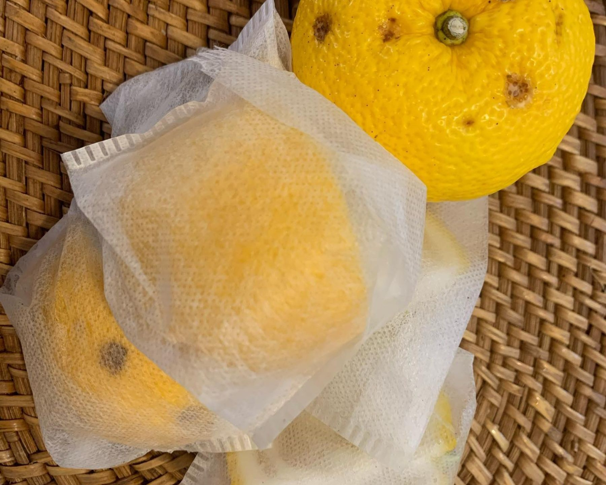
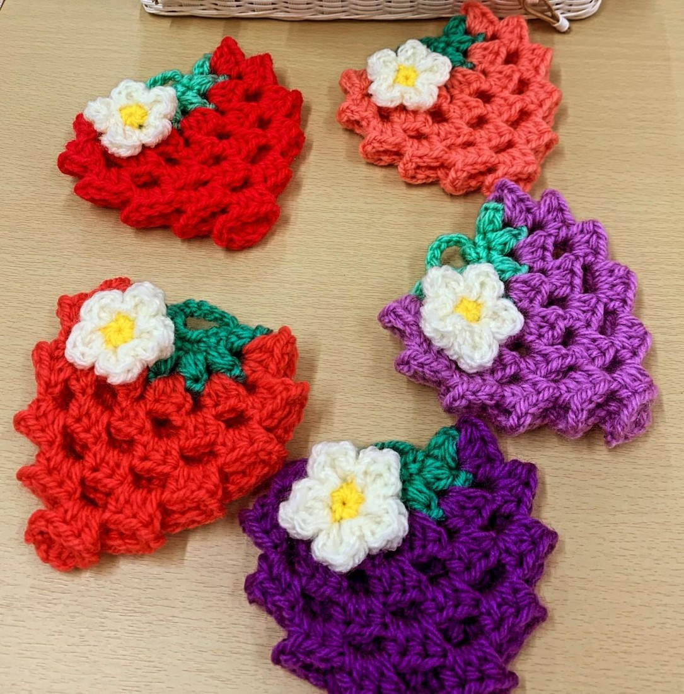
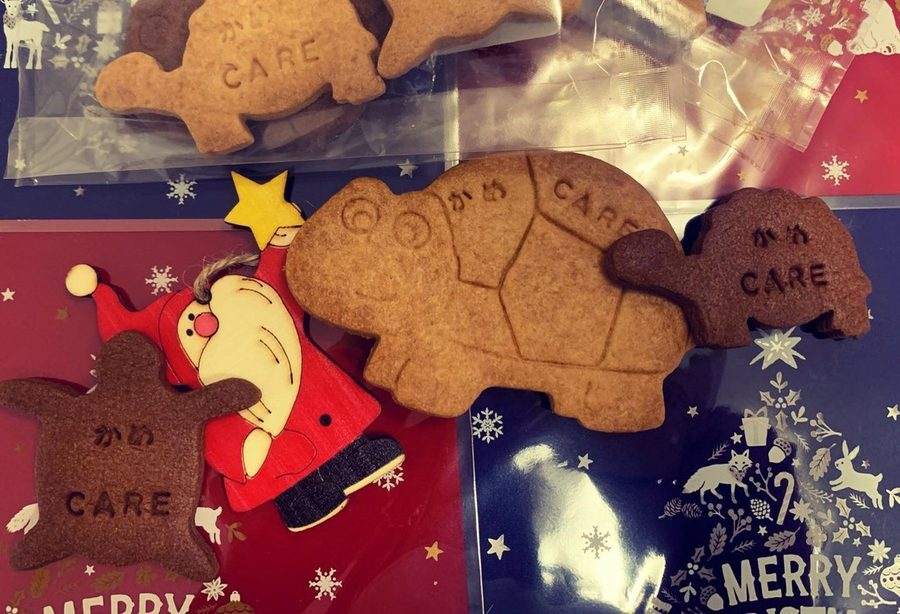

訪問介護と障害福祉の居宅介護、特定相談支援を行う在宅支援事業所です。通院の送り迎えは福祉車両で、介護タクシーも自社で運行しています。外出のお供は移動支援でお受けします。
介護保険と障害福祉の両方に対応しています。送り迎えも外出のお供も、自社で行います。
ご自宅にお伺いして、身体の介護と生活の援助を行います。サービス提供の時間は、朝7時から夜19時までです。訪問時には血中酸素濃度と血圧をはかり、その日の健康観察を記録しています。
介護保険とあわせて、障害福祉サービスの居宅介護もお受けしています。
サービス等利用計画のことを、ご一緒に進めます。まずはご相談ください。
福祉車両でご通院の送り迎えをします。介護タクシーは自社で運行しています。
お出かけのお供をします。朝採り野菜を求めての歩行器ウォーキングのお供も、この事業所の仕事です。
喀痰吸引等登録事業所です。医療的なケアの必要な方にも対応しています。
ケアマネジャーさん・相談支援専門員さんからのご依頼をお受けしています。担当の方へお渡しいただける一覧です。
| サービス提供の時間 | 7:00〜19:00 |
|---|---|
| 事務所の受付 | 8:30〜17:30 |
| お休み | 日曜・年末年始（12/30〜1/3） |
| 対応エリア | ふじみ野市・富士見市・三芳町 |
| 介護保険（訪問介護） | お受けしています |
| 障害福祉（居宅介護） | お受けしています |
| 喀痰吸引等 | 登録事業所です |
| 通院の乗降介助 | 福祉車両でお伺いします |
| 移動支援（ガイドヘルプ） | お受けしています |
| 特定相談支援 | お受けしています |
| 実施地域外の交通費 | 自動車使用時、通常の実施地域を超えた地点から1kmあたり18円 |
| キャンセル料 | 前日17時までのご連絡なら不要。当日のご連絡・ご連絡のない場合は利用料の100% |
| 空き状況・当日の対応 | お電話でご確認ください |
| 訪問後のご報告 | 居宅介護支援事業所・計画相談支援事業所宛に、メールまたはFAXでお送りしています |
出典: 厚生労働省「介護サービス情報公表システム」公表内容／Instagram @kamekubo.carestation
「たった1人のその方は他の誰でもなく、その方の長い長い物語に私たち支援者は入らせて頂く。」
「在宅の要と言われるヘルパーステーションの一つとして、この街に在りたいものです。」

たとえば、冬至の日に
利用者様から「冬至は湯治だから厄払いに柚子湯に入るのよ」と教わって、その日は「車椅子でもお庭から柚子を採り柚子湯をセット」しました。
ご家族からいただいた言葉
「・・・母からの電話がずっと鳴りやまなくて勤務中マナーモードで鳴っていました。」
「皆さんが訪問してくれるようになり 電話が止んでいます。」
「母の話を聴いてくれているんだと 思いました。」
お母様をご支援しているご家族（娘様）から。
引用と写真は Instagram（@kamekubo.carestation）の投稿より
介護技術アセッサーの資格を持つサービス提供責任者がいます。「利用者さんのためと言って『 認知症実践者研修 』に参加してくれているスタッフがいます」
「平成世代スタッフ達が増員し頑張っております」「men'sが増えたりワーママさん方が増えたりと事業所が賑やかに春に向かいます」
半月分の訪問の経過を、居宅介護支援事業所・計画相談支援事業所へまとめてお送りしています。「毎回 500文字に1回の如実な訪問記録が濃縮されています」


はたらくことについてのお問い合わせも、お電話でお受けしています。049-293-1471
引用と写真は Instagram（@kamekubo.carestation）の投稿より／人数は厚生労働省「介護サービス情報公表システム」公表内容
| 事業所名 | かめくぼケアステーション |
|---|---|
| 運営 | 株式会社TCYA |
| 住所 | 埼玉県ふじみ野市亀久保2-4-6コーウンビル103 |
| 電話 | 049-293-1471 |
| FAX | 049-293-1571 |
| 事務所受付 | 8:30〜17:30 |
| サービス提供 | 7:00〜19:00 |
| お休み | 日曜日、年末年始（12月30日〜1月3日） |
| 対応エリア | ふじみ野市・富士見市・三芳町 |
ご利用のご相談、ケアマネジャーさん・相談支援専門員さんからのお問い合わせは、お電話でお受けしています。働くことについてのお問い合わせも、同じ番号でお受けしています。
049-293-1471